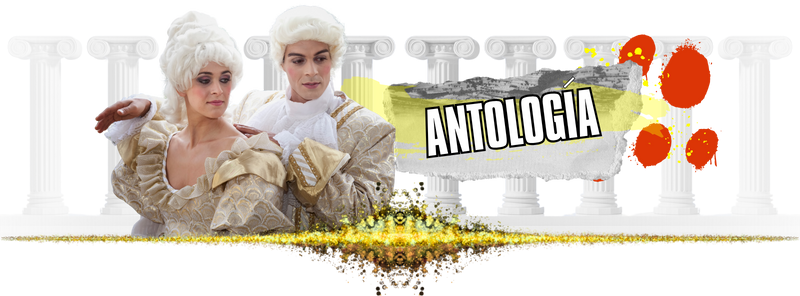
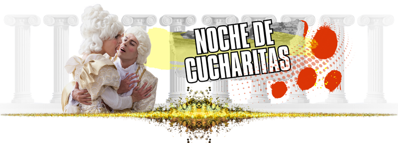
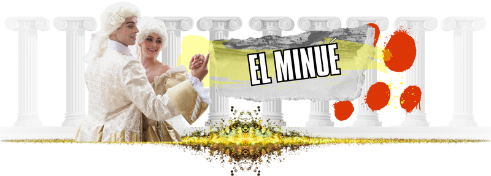
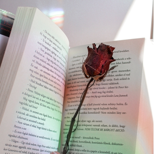
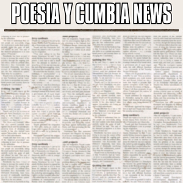
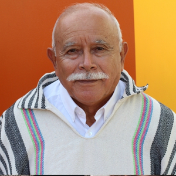

Nosotros
Somos cultura.
Somos arte.
Somos los que somos y los demás palomos.
Sintonizando…
No pudimos conectar con la radio. Revisa tu conexión e intenta de nuevo.
En el aire: {{ nowPlaying.playlist }}
{{ nowPlaying.song.artist }}
Somos cultura.
Somos arte.
Somos los que somos y los demás palomos.
Lunes a domingo, 05:00
Noticias, música selecta y vacilona para despertar al humano asalariado.

Lunes a domingo, 09:00
Grandes éxitos para jóvenes, adultos y ascensores.

Domingo a jueves, 21:00
Ritmos apacibles para el Makin' Makin' Love.

Viernes y sábado, 21:00
A.K.A. el bailongo de Poesía y Cumbia Radio.
Pequeñas cápsulas informativas en la voz del astrónomo más querido de Chile.

Los mejores poemas, declamados por sus autores, se conjugan en una danza con los artistas musicales de todos los tiempos.

Infórmate del acontecer nacional e internacional durante todo el día, salvo los findes en la noche, porque ahí suenan los bailables y nadie quiere que le funen los dancing con noticias sobre las guerras.
Un staff multidisciplinario con años de experiencia en las lides radiales (1 año y 2 meses, aprox.).
Director, CEO y semanero designado
Programador musical

Marketing y sándwiches
Secretaria
Busca la canción en nuestra discoteca y pídela: entra a la cola y suena en los próximos temas.
La música se detiene al salir.